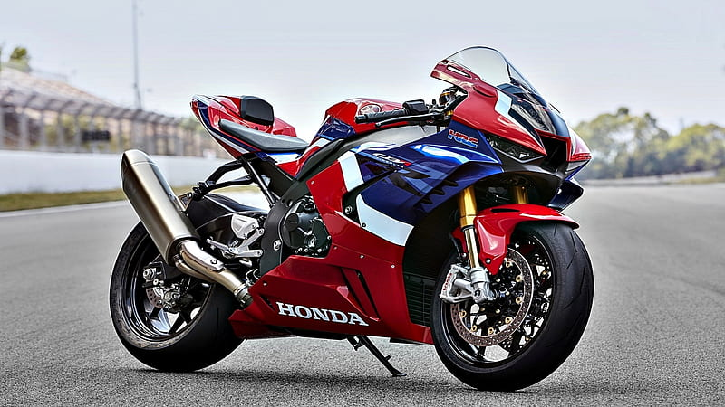
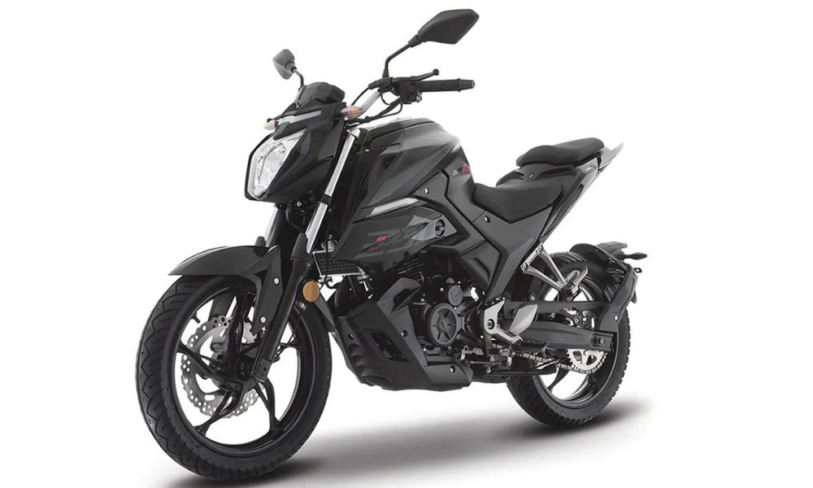
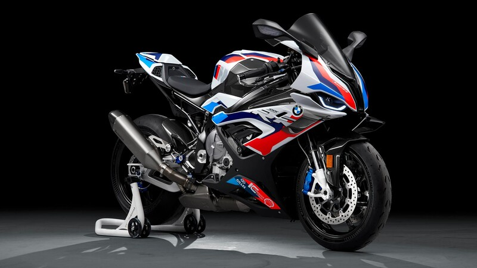
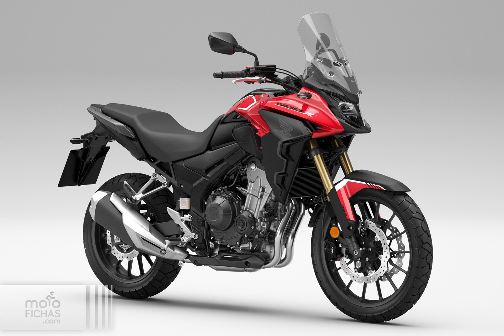

Venta de Motocicletas
Las motocicletas son una opción de movilidad eficiente, económica y versátil. En esta página se presenta una comparativa informativa de distintos modelos, analizando características como cilindrada, potencia, especificaciones técnicas y precios aproximados dentro del mercado actual.
Además, se incluye información histórica de marcas reconocidas y una sección dedicada a la seguridad vial, destacando la importancia del uso de casco y equipo adecuado.
Breve Historia
Yamaha

Yamaha Motor se fundó en 1955 en Japón. Desde sus inicios se enfocó en motocicletas con buena relación entre rendimiento y fiabilidad, y con el tiempo se convirtió en una de las marcas más reconocidas a nivel mundial.
Kawasaki

Kawasaki es parte de un grupo industrial japonés con larga historia. En el mundo de las motos es famosa por su enfoque deportivo, con modelos que priorizan potencia, aceleración y diseño agresivo, especialmente en la línea Ninja.
Honda

Honda Motor se estableció en 1948 en Japón. Se consolidó por su producción masiva, innovación y confiabilidad, destacando tanto en motos urbanas como en modelos de mayor cilindrada para carretera y aventura.
Italika

Italika es una marca mexicana que inició operaciones en 2004 y se popularizó por ofrecer motocicletas accesibles para el uso diario. En México es muy común para movilidad urbana y trabajo, por su disponibilidad y costos de mantenimiento.
Algunos tipos de Motos


Tipos de Motocicletas
- Naked: Versátiles para ciudad, postura cómoda, buen equilibrio potencia/uso.
- Sport: Enfocadas en velocidad y aerodinámica; postura más agresiva.
- Adventure: Pensadas para viajes largos y caminos mixtos; buena comodidad.
- Urbana: Económicas y prácticas para traslados diarios.
Comparativa de Modelos
Tabla con modelos y datos generales (ejemplo escolar).
| Modelo | Tipo | Cilindrada (cc) | Potencia (HP) | Precio Aprox. (MXN) |
|---|---|---|---|---|
| Yamaha MT-07 | Naked | 689 | 74 | $189,000 |
| Kawasaki Ninja 400 | Sport | 399 | 45 | $149,000 |
| Honda CB500X | Adventure | 471 | 47 | $175,000 |
| Italika DM200 | Urbana / Doble propósito | 200 | 15 | $39,999 |
Ventajas y Desventajas por Tipo
| Tipo | Ventajas | Desventajas |
|---|---|---|
| Sport | Mejor desempeño y estabilidad a alta velocidad | Menos cómoda y más exigente en ciudad |
| Adventure | Comodidad + versatilidad para viajes | Más pesada y alta (puede costar maniobrar) |
| Naked | Ágil, práctica y divertida en uso diario | Menos protección contra viento |
| Urbana | Bajo costo y mantenimiento sencillo | Potencia limitada para carretera |
Especificaciones Técnicas (Comparativa)
Datos aproximados para comparar rendimiento y uso.
| Modelo | Torque | Transmisión | Tanque | Peso | Vel. Máx. (aprox.) |
|---|---|---|---|---|---|
| Yamaha MT-07 | 68 Nm | 6 vel. | 14 L | 183 kg (wet) | ~229 km/h |
| Kawasaki Ninja 400 | ~38 Nm | 6 vel. | 14 L | 168 kg (wet) | ~169 km/h |
| Honda CB500X | 43.2 Nm | 6 vel. | 17.7 L | 199 kg (wet) | ~170 km/h |
| Italika DM200 | 16 Nm | 5 vel. | 11 L | 121 kg (wet) | ~110 km/h |
Seguridad Vial: Cascos y Equipo (precios de referencia)
En moto, el casco no es “accesorio”, es el seguro de vida que sí te puedes poner. Aquí hay ejemplos de precios desde gama alta hasta gama media, y un monotraje de precio medio.
Cascos (ejemplos)
| Marca / Modelo | Tipo | Rango | Precio aprox. (MXN) |
|---|---|---|---|
| AGV Pista GP RR | Integral racing (gama alta) | Más caro | $35,999 |
| Alpinestars Supertech R10 | Integral racing (gama alta) | Alta | $32,399 |
| AGV K1 S | Integral (gama media) | Medio | $6,300 |
Monotraje (precio medio)
| Equipo | Uso | Precio aprox. (MXN) |
|---|---|---|
| Dainese Laguna Seca 5 (monopiel) | Pista / conducción deportiva | $35,996 |
Nota: Los precios son de referencia y pueden variar por talla, stock y tienda.
Video y Audio
Video de motocicleta Honda CBR1000RR-R SP
Sonido de motor
Recuerda
Las motos se eligen según el uso: ciudad, carretera, viajes o desempeño. Además de potencia y precio, la seguridad (casco y equipo) debe considerarse como parte esencial del presupuesto. Una comparativa ayuda a tomar decisiones con información clara y ordenada.